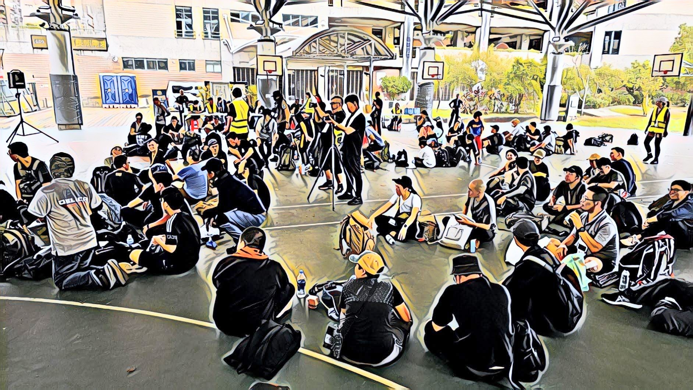
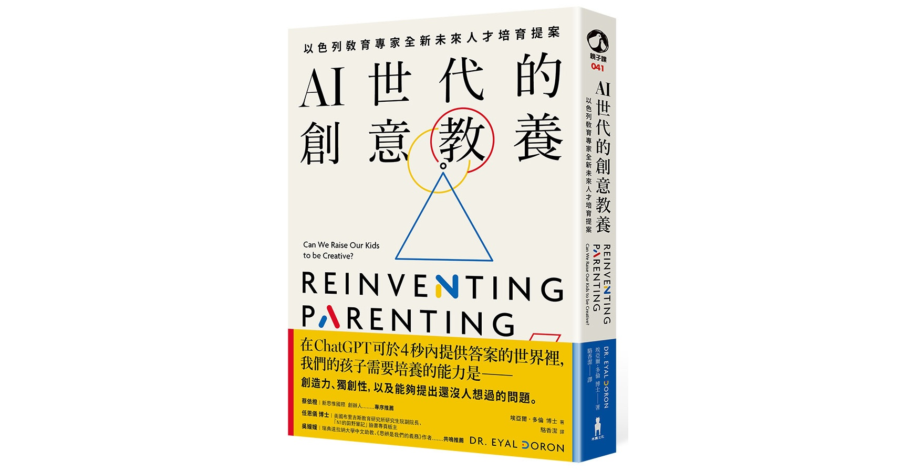
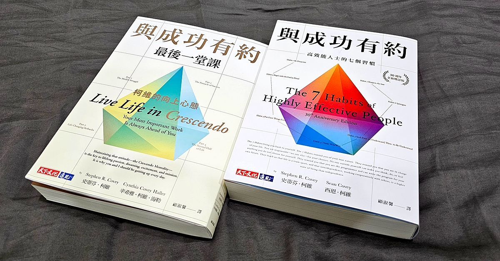
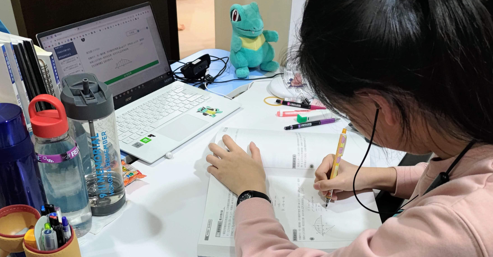
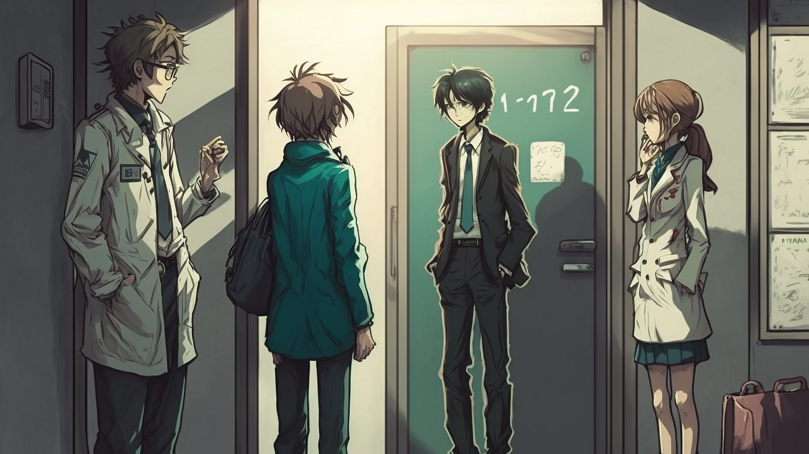
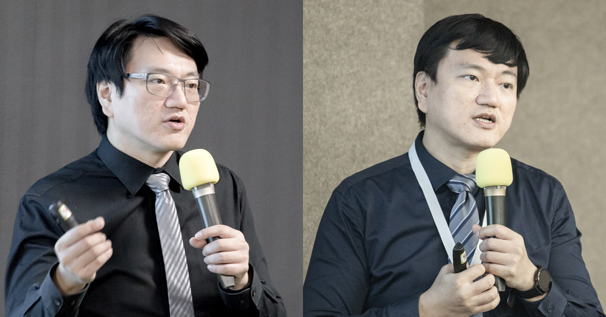
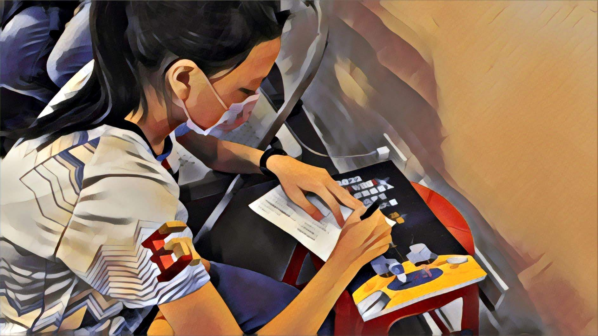
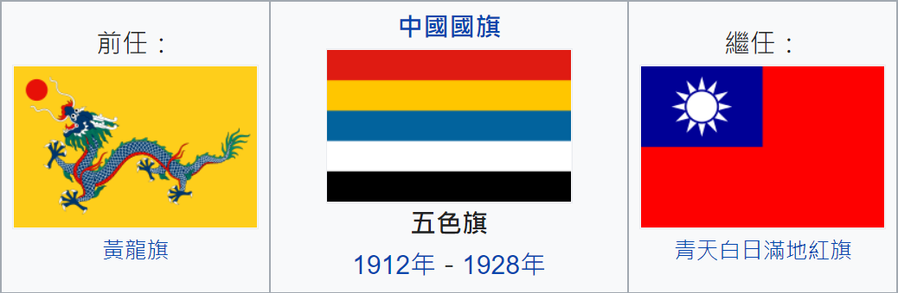
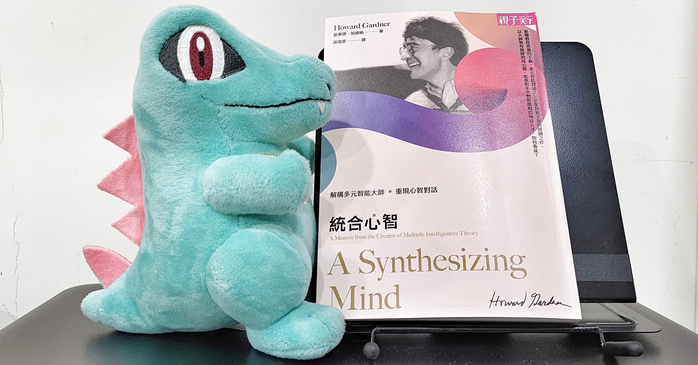

教養思考
教養思考
關於 VEX，我常被家長們問到的一些問題？以及為什麼我們連續學這麼多年？
我有一個高二的女兒，一個國二的兒子，他們從五年前開始學 VEX，曾經一起組隊，也曾經分開組隊過，之後可能又會一起組隊。
閱讀全文 →

時事觀點黑熊學院舉辦的藍鵲行動：戰亂時，你能成功移動到避難點嗎？
今天參加了黑熊學院的藍鵲行動，這是一場大型演訓，就像是一個模擬真實且讓大家思考如何生存的大地遊戲。
閱讀全文 →

教養思考如何養出有創意且能面對未來的孩子？《AI世代的創意教養》推薦序
常聽到的教養主流言論，如果去深思的話，會發現許多矛盾之處。例如：專家分享如何限制孩子 3C 產品與網路使用的實用技巧；老師感嘆現在的孩子都在滑手機跟看影片，專注力下降趨勢很嚴重，呼籲要多讀書。
閱讀全文 →

閱讀筆記《與成功有約最後一堂課》：中年危機的實用工具書
《與成功有約最後一堂課》（左邊這本），是提出「高效能人士的七個習慣」，寫成暢銷大作《與成功有約》（右邊這本）並啟發無數人的史蒂芬柯維，生前與女兒合作的最後一本著作。我自己蠻喜歡的，閱讀過程中，覺得值得日後再次思考，於是摺頁註記的部分不少。
閱讀全文 →

教養思考孩子學校進度跟不上，考試成績不理想，該怎麼辦？
在小孩教養筆記專頁上，有網友詢問，我們家孩子在自己有興趣的領域，如機器人、日文跟數學，都發展得不錯，課業部分不知道怎麼處理？
閱讀全文 →
醫療教育
問：科部內積極者少，我很努力想推但推不動，怎麼辦？
不過，在醫院有個隱形的規矩，就是管好自己，不要管到別人。就像是，自己的住院病人要怎麼處理都可以，但不要去指指點點別人的醫療處置。真看不下去，就 take over 過來顧。這樣的規矩，是因為醫療講究權責相符，醫好了是你的成就感，搞砸了也得自…
閱讀全文 →

醫療教育關於 PGY 應徵住院醫師的一些現況，尤其熱門科。
為了瞭解目前 PGY 應徵住院醫師的狀況，是不是真的進入了論文軍備競賽階段，我詢問了許多參與科部招收住院醫師的校友，以下是目前我所聽到的。
閱讀全文 →
閱讀筆記
那些散落的星星 讀後討論
可自由使用網路跟各種數位工具，如果任何議題思考卡關，都可以跟爸爸討論形塑方向喔！昀靜上完完整的作文訓練，字數請照建議。鎮宇還在練習中，字數可以減半。
閱讀全文 →
 閱讀筆記
閱讀筆記
從放射科醫師到新思惟國際：我的人生體悟
李紹榕學長說，我的醫學生涯蠻特別，希望我分享一些對年輕朋友有幫助的內容。認真想了一下，覺得我也只是照著自己想的路去實踐，而新一代又一代的年輕人們，他們的文化背景、社會氛圍、價值觀型塑、資訊取得，都跟我們不一樣，我不太確定是否真能有幫助。
閱讀全文 →
時事觀點
敦煌壁畫中的太空船
敦煌壁畫中，有沒有太空船？這個問題引發了許多有趣的討論。透過一系列圖文，重新認識這個考古與想像力之間的話題。
閱讀全文 →

生活健康是的，我去做老花雷射 Presbyond LBV 了！評估過程與心得。
許多朋友知道，我之前評估老花雷射好一陣子，可能因為我在同儕間就是給人做事嚴謹且重視細節的印象，許多正在猶豫的同學朋友說，「你在評估喔？太好了，我們等你分享。」因為他們知道，我一定會讀過各種文獻、用各種方式評估，會是高品質的決策。
閱讀全文 →
 時事觀點
時事觀點
【陪你看國際新聞】蛤？中華民國 4.0？
很多關於中華民國的討論，會變成吵架跟各說各話，是因為我們沒有共同的框架，所講的「中華民國」並不一樣。
閱讀全文 →

教養思考關於孩子們「解決問題的能力」的一些想法
世界變複雜得很快，辨認問題，並想辦法解決問題的能力，比以前重要非常多。
閱讀全文 →
教養思考
關於北歐教養的一些想法
臺灣的教養出版，有個熱門主題，是分享北歐的自由尊重的教育方式。
閱讀全文 →

教養思考開學後，孩子發現社會要上中國歷史、中國地理，非常排斥，怎麼辦？
問：校長好，不知道能否冒昧請教您一個難題？我的兒子因為對中國極度厭惡，這幾天剛開學，發現這學期史地是中國史、中國地理，非常反感，他說願意學世界史、世界地理，為什麼要學這個？質疑是洗腦和統戰。爸爸對兒子的拒學態度非常生氣，我勉強想到一個理由，…
閱讀全文 →

閱讀筆記《統合心智》：你的孩子有那些獨特才華，以及他日後可能有怎樣的成功？
這本書是「多元智能 (Multiple Intelligences)」的理論發明人霍華德·加德納的回憶錄。
閱讀全文 →
閱讀筆記
《安倍晉三大戰略》：認識近十年的日本國家戰略
安倍晉三先生在 7 月 8 日遇刺身亡，之後的各種哀悼與報導，以及中國小粉紅們展示的各種離譜下限（文字、影片、商家），都將是一個世代的共同回憶。
閱讀全文 →
這個分類還沒有文章
— 已顯示全部文章 —